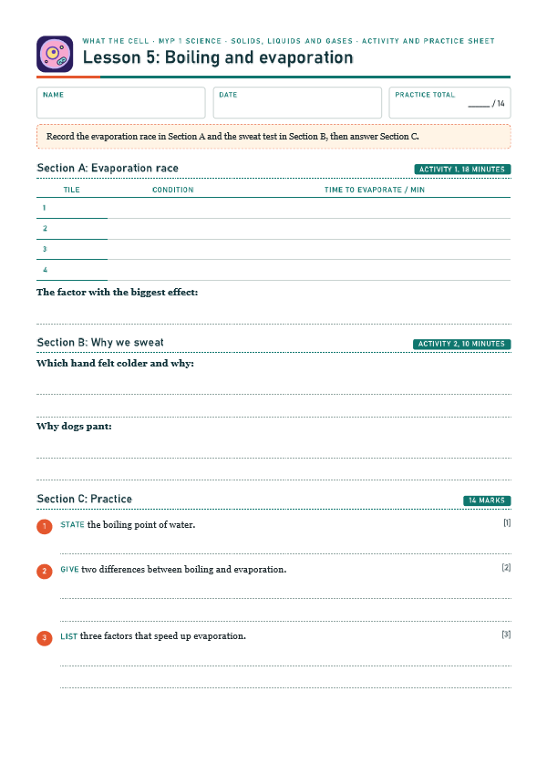

By the end of the lesson you can
- Describe boiling and evaporation
- Distinguish between boiling and evaporation
- Explain why evaporation cools things down
- Identify factors that speed up evaporation
Keys: arrows or a presentation clicker move the slides, F for full screen. Slides with a red dot have a video or simulation.
Videos (all 5 minutes or less)
- 3:57
Boiling vs Evaporation
Wayne Breslyn. While you watch: Where does evaporation happen in a liquid? Slide 10.
Simulations
- Lab
Print and practise

Activity and practice sheet
Used in the lesson’s activities, with practice questions. Your teacher has the answers.
Download (PDF)Lesson 5 slides
All 16 slides in one file, to read again or print. The video buttons on the slides open YouTube.
Download the slides (PDF)Revising? The Revision tab on the unit page has the unit notes and review.
Class activity pack
Everything to print for the lesson’s activities: picture cards, sorting mats, station cards with their kit lists, and the teacher’s set-up notes. Print it before class.
Download the activity pack (PDF)Notes: Boiling and evaporation
boiling
A liquid turning into a gas everywhere in the liquid, with bubbles. For example: water at 100 degrees C.
boiling point
The temperature at which a liquid boils. For example: water: 100 degrees C.
evaporation
A liquid turning into a gas from its surface, below the boiling point. For example: a puddle drying.
water vapour
Water as a gas. For example: in the air you breathe out.
humidity
How much water vapour is in the air. For example: high in Vietnam in the rainy season.
surface area
How much of something is exposed on the outside. For example: a spread-out puddle.
Key words
| boiling | liquid to gas everywhere, at the boiling point |
|---|---|
| evaporation | liquid to gas from the surface, any temperature |
| water vapour | water as a gas |
| humidity | amount of water vapour in the air |
| surface area | the amount exposed on the outside |